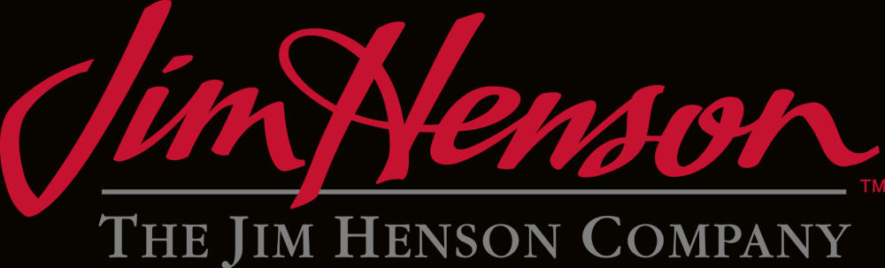

The Jim Henson Company is an American entertainment company located in Los Angeles, California. The company is known for its innovations in the field of puppetry, particularly through the creation of the renowned Muppets characters. The company was established in 1958 by puppeteers Jim and Jane Henson, and is currently independently owned and operated by their children. Henson has produced many successful television series, including The Muppet Show, Fraggle Rock, and Bear in the Big Blue House; as well, the company designed the Muppet characters for the long-running Sesame Street.
The company has also produced theatrical films, including The Muppet Movie (1979), The Dark Crystal (1982) and Labyrinth (1986). Henson also operates Jim Henson's Creature Shop, an animatronics and visual effects studio which has created characters and effects for both Henson productions and outside projects. In 1989, the company entered merger negotiations with The Walt Disney Company, which were canceled following Jim Henson's death in 1990.
Subsequently, control of the company was assumed by Henson's children: Lisa, Cheryl, Brian, John, and Heather. In 2000, Henson was sold to German media company EM.TV and Merchandising AG; by the end of that year, however, EM.TV's stock collapsed, and the Henson family re-acquired the company in 2003. In the interim, EM.TV sold the rights to the Sesame Street Muppets to Sesame Workshop in 2000.
In 2004, Henson sold the rights to The Muppets and Bear in the Big Blue House to The Walt Disney Company, but retains the remainder of its characters, program library, and assets. As of 2019, Brian, Lisa, Cheryl, and Heather Henson run the company. Jane Henson died in April 2013, and John Henson died in February 2014. Brian Henson serves as chairman, while Lisa Henson serves as CEO. Since 2000, The Jim Henson Company is headquartered at the Jim Henson Company Lot, the historic former Charlie Chaplin Studios, in Hollywood.
Films
Adventures of Elmo in Grouchland (1999)
Alexander and the Terrible, Horrible, No Good, Very Bad Day (2014)
Buddy (1997)
Cube (1969)
Dark Crystal (1982)
Five Children and It (2004)
Good Boy! (2003)
Great Muppet Caper (1981)
Labyrinth (1986)
MirrorMask (2005)
Muppet Christmas Carol (1992)
Muppet Movie (1979)
Muppets Take Manhattan (1984)
Muppet Treasure Island (1996)
Muppets from Space (1999)
Pinocchio (2021)
Rat (2000)
Star (2017)
Witches (1990)
Time Piece (1965)
Series
A Muppet Family Christmas (1987)
Animal Jam (2003)
Bambaloo (2002)
Bear in the Big Blue House (1997)
Brats of the Lost Nebula (1998)
Christmas Toy (1986)
CityKids (1993)
Construction Site (1999)
Dark Crystal: Age of Resistance (2019)
Dinosaur Train (2009)
Dinosaurs (1991)
Dog City (1992)
Doozers (2013)
Dot. (2016)
Earth to Ned (2020)
Emmet Otter's Jug-Band Christmas (1977)
Farscape (1999)
Farscape: The Peacekeeper Wars (2004)
Fearing Mind (2000)
Fraggle Rock (1983)
Fraggle Rock: The Animated Series (1987)
Frances (2006)
Frog Prince (1971)
Ghost of Faffner Hall (1989)
Great Santa Claus Switch (1970)
Gulliver's Travels (1996)
Hi Opie! (2014)
Hoobs (2001)
It's a Very Merry Muppet Christmas Movie (2002)
Jack and the Beanstalk: The Real Story (2001)
Jim Henson Hour (1989)
Jim Henson's Animal Show (1994)
Jim Henson's Creature Shop Challenge (2014)
Jim Henson's Mother Goose Stories (1990)
Jim Henson's Pajanimals (2008)
Jim Henson's The Possibility Shop (2009)
John Denver & the Muppets (1979)
Julie's Greenroom (2017)
Land of Gorch (1975)
Lily the Unicorn (2015)
Little Muppet Monsters (1985)
Lore Olympus Adaptation (TBA)
Me and My Monsters (2010)
Miss Piggy's Hollywood (1989)
Mopatop's Shop (1999)
Mr. Willowby's Christmas Tree (1995)
Muppet Babies (1984)
Muppets at Walt Disney World (1990)
Muppets Celebrate Jim Henson (1990)
Muppets Tonight (1996)
Muppets: A Celebration of 30 Years (1986)
Muppets' Wizard of Oz (2005)
Out to Lunch (1974)
Rocky Mountain Holiday (1983)
Sam and Friends (1955)
Secret Life of Toys (1993)
Secrets of the Muppets (1992)
Sid the Science Kid (2008)
Splash and Bubbles (2016)
Storyteller (1988)
Storyteller (TBA)
Tale of the Bunny Picnic (1986)
Telling Stories with Tomie dePaola (2001)
That Puppet Game Show (2013)
The Muppet Show (1976)
Top Puppet (TBA)
Turkey Hollow (2015)
Wilson & Ditch: Dinning America (2010)
Word Party (2016)
Wubbulous World of Dr. Seuss (1996)